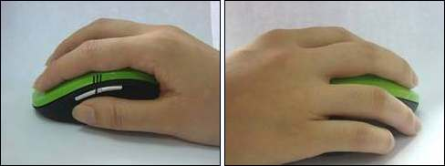
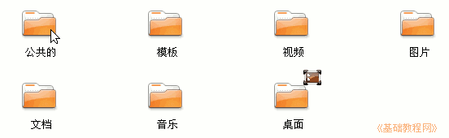
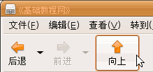

电脑操作基础
作者：TeliuTe 来源：基础教程网
鼠标已经成为操作电脑的必备工具，要想熟练地操作电脑就必须要会操作鼠标，而且是轻巧使用；
1、抓握鼠标的方法是用手掌心轻轻贴着鼠标，拇指和小指轻轻抓在鼠标的两侧，

1）将食指和中指自然弯曲，轻轻贴在鼠标的左键和右键上，第四个无名指自然落下跟小指一起抓在侧面，
2）这时拇指、食指、中指的指肚贴着鼠标，无名指和小指的内侧面握住侧面，如果鼠标乱晃就向下轻轻挤着些鼠标，
3）胳膊的重量落在手臂上，保持手臂不动，左右晃一下手腕，鼠标前后不动、很平滑移动不跳跃；
2、 移动鼠标是基本操作之一，先稳住鼠标不乱晃，让鼠标平稳的左右、前后移动，使得显示器上的鼠标指针能听话，
1）左右移动时手臂不动，拇指和小指、无名指轻轻卡住鼠标，手腕左右晃动，鼠标就会跟着移动了，食指和中指 轻巧贴着鼠标，别使劲会帮倒忙的；
2）前后移动要稍微难一些，拇指和小指、无名指还是要轻轻卡住鼠标，稍稍向下压住，
如果长距离移动，就用胳膊移动来继续移动鼠标，
3）如果鼠标跑得太远了，拿回来的方法是：轻轻抓起鼠标让它悬空，提起来放回到原来的地方，由于是悬空，显示器上的指针就不会跟着动；
3、单击鼠标表示选择或者选中，操作方法是先稳定好 鼠标，稍稍用力卡住鼠标，然后食指轻巧的按下去，再松开，键会自己弹起来并发出清脆的咔嗒声，
其他指头千万别动，一动就帮倒忙了，如果弄错了，取消的方法是移开到旁边去点一下左键，再回来重试；
4、双击鼠标是表示打开，操作的方法是食指快速的按两下左键，速度要轻快，声音要脆， 要领是按键点到为止，轻巧地连续点两下，
如果错了，也在空白处点一下，取消了重来；
5、拖动是将一个图标拖到另一个地方去，或者画一个方框什么的，方法是食指按住后别松开，保持食指 按住别松，然后向左或向右移动，
长距离移动要用胳膊，小范围的拖动，手腕移动就可以了，关键是食指别松开， 一旦松开就再来一次；
练习：
1）左右移动，将鼠标指针在屏幕上移动，写一个“之”字，练习三遍，熟练为止；
2）上下移动，将鼠标指针在屏幕上移动，写一个“川”字，练习三遍，熟练为止；
3）单击，点上面板的菜单“位置－主文件夹”，把里面的各个文件夹从左到右挨个单击，注意单击位置瞄准上面的图标，别在文字上，练习三遍，中间有错误就得重新来，直至熟练为止；

4）双击，将主文件夹里面的各个图标文件夹挨个双击打开，然后点左上角的“向上”按钮退回上一层；

单击窗口右上角的叉按钮关闭主文件夹窗口，再重新打开，练习三遍，中间有错误就得重新来，直至熟练为止；
5）拖动，将主文件夹里图标向空白地方，试着拖动一下，从左边拖到右边，再拖回来，如果掉了接着拖，如果变成双击打开，关掉再来，练习三遍，直至熟练为止；
6）多活动食指和中指，练习关节的灵活性和力量，经常活动手腕防止疲劳；
本节学习了鼠标的基本操作，如果你成功的完成了练习，请继续学习下一课内容。
本教程由86团学校TeliuTe制作|著作权所有，不得用于商业用途
基础教程网：http://teliute.org
美丽的校园……
转载和引用本站内容，请保留作者和本站链接。